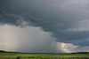

thunderstorm

Has synonym(s): storm~lightning, storm~electrical, thundershower
Definition: A thunderstorm, also known as an electrical storm or a lightning storm, is a storm characterized by the presence of lightning and its acoustic effect on the Earth's atmosphere, known as thunder. Relatively weak thunderstorms are sometimes called thundershowers. Thunderstorms occur in a type of cloud known as a cumulonimbus. They are usually accompanied by strong winds and often produce heavy rain and sometimes snow, sleet, or hail, but some thunderstorms produce little precipitation or no precipitation at all. Thunderstorms may line up in a series or become a rainband, known as a squall line. Strong or severe thunderstorms include some of the most dangerous weather phenomena, including large hail, strong winds, and tornadoes. Some of the most persistent severe thunderstorms, known as supercells, rotate as do cyclones. While most thunderstorms move with the mean wind flow through the layer of the troposphere that they occupy, vertical wind shear sometimes causes a deviation in their course at a right angle to the wind shear direction.
Source: Wikipedia
Wikipedia Page (Something wrong with this association? Let us know.)
Wikidata Page (Something wrong with this association? Let us know.)